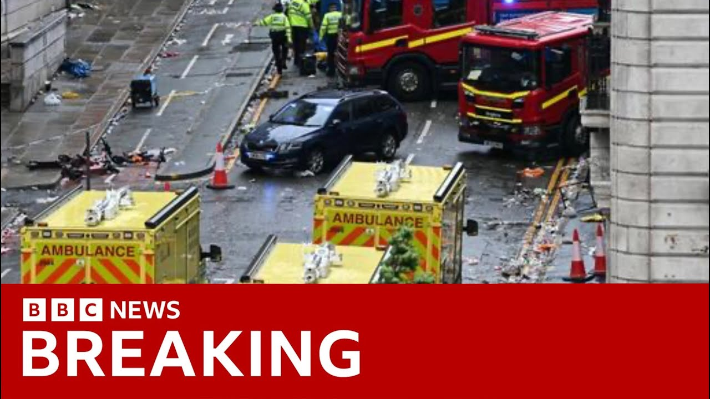

【利物浦胜利游行惊魂：汽车冲入人群 | BBC新闻】
Summary: A day of celebration turned tragic when a car plowed into crowds during Liverpool FC's victory parade, leaving multiple injuries and sparking a major police investigation.
摘要： 利物浦足球俱乐部胜利游行期间，一辆汽车冲入人群，庆祝日变悲剧，造成多人受伤并引发警方大规模调查。

⏱️ Estimated Reading Time: 17 min
A day of celebration in Liverpool turned to horror this evening after a car plowed into a crowd of people during Liverpool FC's Premier League victory parade.
利物浦的庆祝日今晚变成恐怖时刻，一辆汽车在利物浦足球俱乐部英超胜利游行期间冲入人群。
Hundreds of thousands of fans were celebrating on the streets of the city as the team took part in a 10-mile open top bus parade.
数十万球迷在街头庆祝，球队参加了10英里的敞篷巴士游行。
The collision happened just after 6:00 tonight on Water Street shortly after the players bus had passed through.
碰撞发生在今晚6点刚过的沃特街，球员巴士刚经过不久。
Muryside police said tonight they've arrested a 53-year-old white British man.
默西塞德警方称已逮捕一名53岁的英国白人男子。
The prime minister, Saki Starmer, has described the scenes as appalling.
首相萨基·斯塔默称现场画面令人震惊。
Liverpool Football Club said, "Our thoughts and prayers are with those affected by this serious incident."
利物浦足球俱乐部表示：“我们的心与受此严重事件影响的人们同在。”
Our correspondent Judith Morates is in Liverpool tonight.
我们的记者朱迪思·莫拉特斯今晚在利物浦。
Yes. A little over four hours ago, the street where I'm standing was absolutely packed.
是的，四个多小时前，我所在的街道人山人海。
The mood was jubilant.
气氛欢腾。
People had come out in their thousands to celebrate their teams league victory.
成千上万的人出来庆祝球队联赛胜利。
The mood was jubilant and then suddenly out of nowhere things changed.
气氛欢腾，但突然毫无预兆地变了。
Now you can see behind me I think uh the tent there which marks the spot where this happened.
现在你能看到我身后的帐篷标记了事发地点。
Uh absolute chaos in the aftermath.
事发后一片混乱。
And tonight the emergency services have launched a huge investigation.
今晚应急部门展开了大规模调查。
They're still trying to get to the bottom of the circumstances behind this collision.
他们仍在追查碰撞背后的真相。
Liverpool Football Club have said, as you just said, that they are offering their support to the emergency services.
利物浦足球俱乐部表示正全力支持应急部门。
The prime minister has described the incident as appalling, but there have been um on all fronts, people saying uh there have been messages not to speculate about the background to what has happened and the emergency services we expect to give an update uh later on tonight with more of the background.
首相称事件骇人，但各方呼吁勿猜测背景，应急部门预计今晚将更新进展。
The ambulance service, meanwhile, have described this and declared it as a major incident.
救护部门将此定性为重大事件。
Crowds of Liverpool fans had come out to celebrate this afternoon, but the carnival turned into carnage.
利物浦球迷下午还在庆祝，狂欢却变成惨剧。
A car was making its way along a closed road.
一辆汽车沿封闭道路行驶。
It looks as though people were trying to stop it.
似乎有人试图阻拦。
A warning that what we're about to show you is distressing.
警告：即将播放的画面令人不适。
With no idea of what's about to happen, people are still celebrating when suddenly out of nowhere, the car careers towards them and plows into the crowd which is rose deep.
毫无警觉的人群仍在庆祝，汽车突然失控冲入密集人群。
People are obviously badly hurt.
多人明显重伤。
There's panic and chaos.
现场恐慌混乱。
This footage from the roadside shows the immediate aftermath.
路边画面显示事发后的场景。
And then we suddenly saw the car reverse and then accelerate and move through the crowd.
随后汽车突然倒车加速冲过人群。
And honestly, people scattered like bowling pins.
人群如保龄球瓶般四散。
Honestly, the the the change in the mood from what has been a glorious glorious day to just hell on earth.
欢庆日瞬间变成人间地狱。
It was Yeah, it was terrifying.
太可怕了。
It genuinely was terrifying.
真的恐怖至极。
Um, and then suddenly I heard it accelerate.
突然听到汽车加速。
Um, heard it rev its engine and kind of accelerate a bit kind of forwards like so kind of further down the road and then suddenly it started accelerating in the opposite direction and it rammed into the actual ambulance itself.
引擎轰鸣中汽车先前行又突然反向加速撞上救护车。
So it was quite a loud kind of bang.
撞击声巨响。
Moments after the crash, this video shows people surrounding the car.
撞车后视频显示人群包围车辆。
The mood of the crowd has turned to anger.
人群情绪转为愤怒。
Some try to get into the vehicle.
有人试图进入车内。
The back window is smashed.
后窗被砸碎。
The police struggled to hold people back.
警方艰难阻拦人群。
A 53-year-old white British man from the Liverpool area has been arrested.
一名53岁利物浦本地白人男子被捕。
Police did not say whether he was the driver, and they're asking people not to speculate.
警方未确认其是否为司机，呼吁勿猜测。
It's not yet known why the crash happened or how seriously people have been hurt.
事故原因及伤者情况尚不明确。
The emergency services are expected to provide an update later and the police say they've launched an extensive investigation into the circumstances leading up to the collision.
应急部门将更新进展，警方正全面调查事故背景。
Judith Morates, BBC News, Liverpool.
BBC新闻朱迪思·莫拉特斯于利物浦报道。
And our UK editor, Ed Thomas, is in the city this evening.
英国编辑埃德·托马斯今晚也在利物浦。
Ed, uh, your assessment of the mood there, what people are saying to you at the end of this day?
埃德，当地氛围如何？人们作何反应？
Yeah, it's quite a flat atmosphere here tonight.
今晚气氛沉闷。
It is unbelievable to think that tens of thousands of Liverpool supporters were celebrating a moment of absolute joy which ended in seconds on Water Street here.
难以想象数万球迷的欢庆在沃特街瞬间终结。
This is the place where the prime minister has described appalling scenes.
首相所称的骇人现场就在此处。
We can still see the police here tonight.
警方仍在现场。
The police tape is here as well.
警戒线仍未撤除。
And in the distance is the trauma center which was put there to treat the casualties who had collided with the car.
远处是为伤者设立的创伤中心。
Uh it's now the job of the police to try and find out what happened here and they will be listening to eyewitnesses to try and find out and piece together what happened.
警方正通过目击者证词还原事件。
One person who was there and we're very grateful for him speaking to us is Matt Cole.
现场目击者马特·科尔接受了采访。
Matt is a BBC reporter and was here with his family.
马特是BBC记者，当时与家人同在。
Um thank you for talking to us Matt.
感谢接受采访。
Um, first of all, how are you doing and how are your family?
你和家人状况如何？
We're okay.
我们还好。
Uh, shocked.
但很震惊。
I think the adrenaline waves keep coming over us because we went from a moment of celebration down here at Moan of Joy.
从狂喜到惊恐，肾上腺素仍未消退。
My son had just seen his footballing hero Mo Salah lifting the trophy in front of him.
我儿子刚目睹偶像萨拉赫举起奖杯。
He said it was the best of his life turned into perhaps not this.
他说这是人生巅峰，转眼却成噩梦。
Would you be able to talk us through the best you can the order of events here when you first became aware that this van was on the street?
能否回忆事发经过？
Well, look, 10 minutes after the bus had come past us here, we and a huge number, thousands of people were walking up here.
巴士经过10分钟后，我们与数千人同行至此。
Now, as we got just to where about you can see the blue tents, maybe a little beyond, the crowd began to pause a bit, an ambulance was blocking our way.
接近蓝色帐篷处，人群因救护车受阻暂停。
It couldn't get through the crowd.
救护车无法通过人群。
We went round it and as we came round it, suddenly beeping and screaming, and this blue car just came straight toward us.
我们绕行时突闻鸣笛尖叫，蓝色汽车直冲而来。
I grabbed my daughter, I jumped, my wife behind me, did the same.
我抓住女儿跳开，妻子紧随其后。
The the car then came past us.
汽车从我们身旁掠过。
We had people banging on it and then chasing it.
有人拍打并追赶车辆。
The back window was smashed in.
后窗被砸碎。
And thankfully that ambulance that had stopped because it couldn't get through the crowds, I think is what caused it to stop and prevent it coming further down here where thousands and thousands of people were still celebrating.
幸亏受阻的救护车逼停汽车，避免其冲入更密集人群。
It's very early, I know, but do you have any understanding how this vehicle got to be on Water Street?
你可知车辆如何进入沃特街？
It came out of the blue because at that time this area was still closed to traffic.
事发突然，因该区域仍禁止通行。
There were thousands of people here that it made no sense and the the moment you saw it trying to register what you were seeing literally made no sense.
数千人在场，车辆出现毫无逻辑。
It was beeping and as I sort of cast my mind back I remember that.
回忆中记得鸣笛声。
But I most vividly just remember the men shouting and banging and chasing and trying to stop.
但最清晰的是人们的喊叫、拍打与追赶。
And at that point we had no idea.
当时我们完全不明状况。
We grabbed the children.
我们抓住孩子。
We ran up.
向上跑。
We ran left.
向左跑。
I I looked back afterwards.
回头望去。
I could see a handful of people sitting, but I couldn't see any other casualties.
只见零星坐地者，未见其他伤者。
But because we had no idea what this was, and my children were my priority, I grabbed them and we took off.
因不明状况且孩子优先，我们迅速撤离。
Okay. Okay. Thank you so much for talking to us, Matt.
非常感谢，马特。
We're very grateful.
衷心感谢。
Take care of yourself.
请保重。
Um, one thing we don't know tonight is the condition of the people who have been injured here.
伤者情况尚不明确。
We understand a major incident was declared and a lot of the casualties were sent to hospitals across Muryside.
已知事件定性为重大事故，伤者送往默西塞德多家医院。
But what we do know is that Muryside have been very quick to release information here.
但默西塞德警方信息发布迅速。
A 53-year-old white British man has been detained and he's been questioned by police.
一名53岁英国白人男子被拘留审讯。
Ed, thank you.
谢谢埃德。
Ed Thomas there in the city tonight.
埃德·托马斯今晚在利物浦报道。
Well, let's take a few minutes to talk about uh the investigation, what we know so far.
现在讨论已知调查进展。
Our UK correspondent Daniel Sanford has been looking into all of that and there is the video that we've we've touched on several times.
英国记者丹尼尔·桑福德分析了多次提及的现场视频。
What can be learned from that video?
视频揭示了什么？
What does it tell us, Daniel?
丹尼尔？
Well, obviously it's very early stages and there's a number of videos uh lots and lots of people there with their phones today and it's hard to be sure what order those videos should be viewed in.
现阶段众多手机视频的时间顺序尚难确认。
What this doesn't look like is somebody who's driven immediately at high speed into a large crowd of Liverpool supporters.
不像是直接高速冲撞人群。
That doesn't seem to be how the incident starts.
事件起始并非如此。
Uh there seems to be a vehicle. uh looks like a gray Ford Galaxy making its way quite tenderly at first through the crowd and I understand that at that point some of the police roadblocks has started to be lifted and then there seems to be a growing sense of anger between the driver and some people in the crowd.
灰色福特Galaxy起初缓慢穿行，路障部分解除后司机与人群冲突升级。
It's not quite clear what triggers that.
冲突起因不明。
But then there is this really horrendous moment when the driver just puts his foot down and drives at very very high speed into a large number of people and you're seeing people bouncing off the car as he goes and there's un undoubtedly people would have been very seriously injured at that moment.
随后司机突然加速冲撞，多人被撞飞，必定造成重伤。
So but it doesn't look like your classic example of a car immediately plowing in in a sort of terrorist style attack.
不似典型的恐袭式冲撞。
That's not what it looks like in the in the videos unless you look just at the last bits of the video.
除非只看最后片段。
Okay.
明白。
So, what a big question, but what will the police investigation be focusing on right now?
警方当前调查重点是什么？
Well, Mosy Side Police are leading the investigation, but they are getting support from the Northwest Counterterrorism Policing uh unit.
默西塞德警方主导，西北反恐部门协助调查。
And that's because while it's unclear what the motivation was for driving at high speed into the crowd, there is that possibility at the back.
虽动机不明，但不排除恐袭可能。
Is there some kind of uh political motivation or something like that?
是否存在政治动机？
Because of the resources of Muryside Police and Northwest Counterterrorism Policing, there is an ability to do a really really really forensic investigation.
凭借双方资源可进行深度取证。
They'll have the ability to look at all the cameras in the city that that they will be able to pour through all the CCTV cameras, build up what happened before the incident.
将调取全市监控还原事前经过。
They'll be able to draw in all the videos that people send in from their phones to the police investigation, try and build up a complete uh picture.
整合民众提供的手机视频拼凑全貌。
They'll obviously be able to do very very quick background checks on the man who's been detained, who the police were very quick to describe as 53 white British male.
快速核查被捕男子背景。
And obviously that's a lesson learned uh from Southport when uh it was not answered who the suspect was for several days and then there were the problems with the rioting that arose out of that.
这是从绍斯波特事件中吸取的教训。
So it'll be a very very detailed uh investigation because of the huge resources that will be available because of the involvement of counterterrorism policing.
反恐部门介入将推动细致调查。
All right, Daniel, thanks so much Daniel Sanford.
谢谢丹尼尔·桑福德。
Well, let's talk as well to our sports correspondent, Katie Gornel, because uh Katie, you've been in Liverpool all day to follow the parade, to follow what was meant to be a day of absolute joy and celebration and and sport, not just Liverpool FC, sport has been really shaken by how today has ended.
连线体育记者凯蒂·戈内尔，今日结局震撼体坛。
It has indeed, James.
确实如此。
Yes, it's the mood has been absolutely transformed here in the city.
利物浦氛围彻底转变。
It's hard to believe almost that several hours ago I was standing down there among the fans on the Strand and witnessing scenes that were absolutely joyous.
几小时前球迷还在欢庆。
Fans were dancing, singing, celebrating, letting off flares, watching their heroes go by on the open top bus that passed along down here on the Strand and celebrating Liverpool's 20th league title win.
球迷跳舞唱歌放烟花，庆祝球队第20次联赛夺冠。
And then minutes after that over top bus had passed and the crowd started to dissipate, it became apparent that something very serious of course had happened on Water Street which is just over there behind me.
巴士离开人群渐散时，沃特街突发严重事件。
Now tonight's Liverpool Football Club have released a statement which says we're in direct contact with Muryside Police.
利物浦俱乐部声明正与警方紧密沟通。
They said our thoughts and prayers are with those who have been affected by this serious incident.
心系受影响者。
We will continue to offer our full support to the emergency services and local authorities who are dealing with this.
全力支持应急部门工作。
And and we also understand as well that in light of tonight's events, the club postponed staff celebrations which were due to take place uh tomorrow.
原定明天的员工庆祝活动已推迟。
But of course, this is such a passionate football city, Liverpool's local rivals Everton have also posted on social media tonight saying, "Our thoughts are with all those who have been affected by this serious incident in our city."
同城对手埃弗顿也发文慰问。
A number of other clubs around the country have posted similar messages and the Premier League have also said tonight in a statement they're shocked and appalled by events in Liverpool this evening.
多家俱乐部及英超联盟发声表示震惊。
Our heartfelt thoughts go out to all those injured and affected.
心系伤者及受影响者。
We've been in contact with Liverpool club and have offered our full support.
已联系利物浦俱乐部并提供支持。